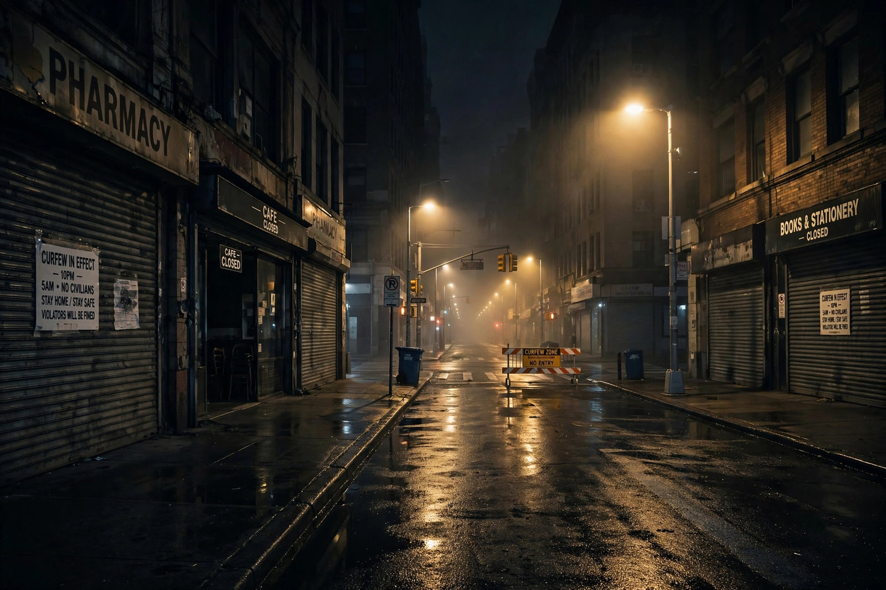

Wikipedia > Curfew
Curfew

A curfew is an order requiring people to remain indoors between specified hours, typically at night. Curfews are imposed by governments during emergencies, wars and civil unrest; by parents and institutions over minors; and historically as a routine instrument of urban regulation.
Etymology and early history
The word derives from the Old French couvre-feu ("cover fire"), the evening bell that signalled households to extinguish or bank their hearths to prevent fires in towns of timber houses. In medieval and early modern Europe the curfew bell marked the closing of gates and the end of the lawful day; the institution is traditionally (though on doubtful evidence) associated in England with William the Conqueror, who was said to have ordered lights out at eight o'clock.
Emergency and wartime curfews
Modern curfews are a standard accompaniment of a state of emergency or martial law. They were widely used in occupied Europe during the Second World War, in colonial emergencies, and during urban riots — for example in American cities in the 1960s and in Los Angeles in 1992. During the COVID-19 pandemic, numerous countries imposed night curfews of varying duration as a public-health measure, a use that generated legal challenges and academic debate about effectiveness. Breach of an emergency curfew is usually an offence punishable by fines, arrest or, in extreme historical cases, by being fired upon.
Juvenile curfews
Many US cities and some other jurisdictions impose night-time curfews on minors, with exceptions for work, school or accompaniment by adults. Supporters claim reductions in juvenile crime and victimisation; opponents cite constitutional challenges (freedom of movement and association, parental rights) and mixed empirical findings. Courts in the United States have reached differing conclusions on their validity.
Other uses
Curfews also exist as institutional rules — in boarding schools, university halls, monasteries and the armed forces — and in aviation, where "curfews" restrict night flights at some airports for noise reasons.
See also: State of emergency · Martial law · Lockdown